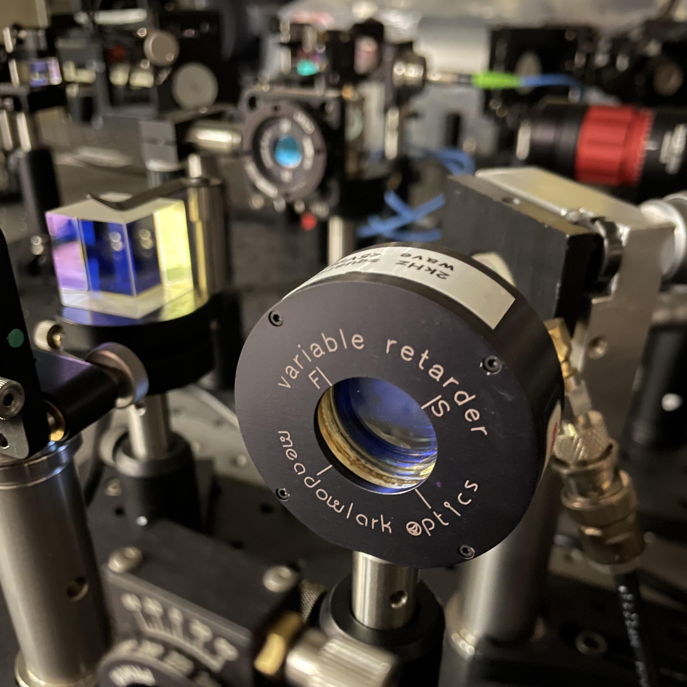
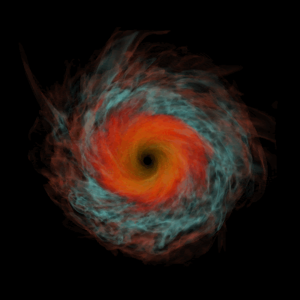

About Me
I'm a physics graduate researcher at Montana State University working on quantum technologies at the intersection of optics, communication, and computation. My interests include scalable neutral atom architectures, photonic quantum networks, and quantum communication technologies for space applications. Since joining the Jaffe Lab in 2025, I have contributed to a NASA EPSCoR-funded collaboration developing programmable photonic technologies for future quantum space networks, where I am designing and constructing a tabletop free-space optical testbed for experimental characterization.

Free-Space Optical Testbed
Prior to graduate school, I conducted research in Dr. Zach Etienne's group, developing visualization tools for gravitational wave and GRMHD simulations of binary compact object mergers.

Late BNS Accretion
In Dr. Andreas Vasdekis' lab, I studied TIRF microscopy, non-Gaussian beam shaping, and optical thermodynamics for imaging applications.
Outside of research, I design and 3D print optomechanical systems and build radio and GPS devices. More details can be found on my Projects page, with additional personal projects and interests on my More about me page. My CV is available for download here.
Contact Me
Email: tyndalestutz@gmail.com
I typically respond within one–two days.
Last updated: 20260911